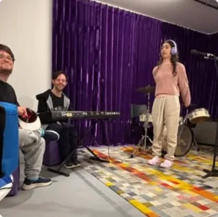
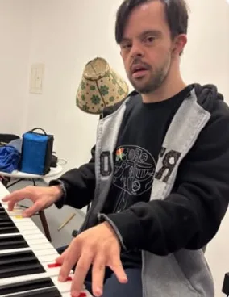
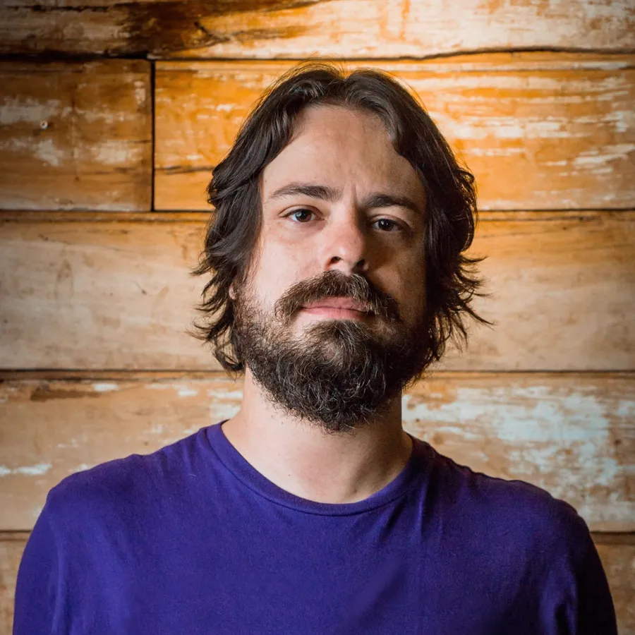

Adultos a partir de 18 anos
Com autismo (suporte nível 1 e 2), síndrome de Down ou deficiência intelectual.
Todo mundo tem um som.
Juntos, ele vira banda.
Educação musical anticapacitista em Porto Alegre. Cinco meses de estúdio, repertório próprio e um show ou vídeo no fim, com cada aluno no centro do próprio som.
Adultos e jovens adultos neuroatípicos que querem tocar em grupo, e as famílias que buscam um espaço de arte, e não de reabilitação.
Com autismo (suporte nível 1 e 2), síndrome de Down ou deficiência intelectual.
O primeiro contato com os instrumentos é livre, sem rigor técnico. A técnica vem depois, no ritmo de cada um.
De 3 a 8 participantes por turma, num estúdio profissional, entre adultos e parceiros de música.
Por muito tempo, a prática musical de pessoas com deficiência foi vista só como reabilitação. O acompanhamento terapêutico tem o seu lugar. Aqui, a música é expressão artística e protagonismo.
O participante é acolhido em suas demandas terapêuticas
Estimula a resposta sensorial e emocional à música
Busca o ganho funcional para o dia a dia
O participante é reconhecido como músico e integrante de banda
Ensina a regência, a divisão de oitavas e o tempo da banda
Termina com uma entrega artística: show ou vídeo
Desenho Universal para Aprendizagem, métodos visuais e tecnologias assistivas para que a neurodivergência apareça como assinatura estética, e não como barreira.
Participante e família entram juntos, conhecem os instrumentos e se ambientam. Primeiro, sentir-se seguro.
Um quadro de rotina no início da aula traz previsibilidade: todos sabem o que vem a seguir.
Experimentar e se divertir antes de qualquer exigência técnica. Entrar no universo da música primeiro.
Conversa e observação para mapear a identidade sonora de cada um. A partir daí, o repertório nasce.
Cada ciclo fecha com uma entrega artística profissional: um show ou um vídeo da banda. É a dignidade de um trabalho de adulto, feito com o próprio som.


[VÍDEO DO ENSAIO ABERTO · ENTRA DEPOIS DE 17/12]

[ARQUIVO A ENVIAR: VÍDEO DE APRESENTAÇÃO]
Músico e psicólogo há mais de 10 anos, com anos de trabalho junto a adultos neuroatípicos e suas famílias em Porto Alegre. Criou a Multifônica para que esses músicos tenham um lugar de banda, palco e autoria.
CRP [NÚMERO DO CRP]
[DEPOIMENTO REAL DA ANDRESSA CASTRO, ACOMPANHANTE TERAPÊUTICA DE UMA ALUNA]
Cinco meses de vivência em estúdio, na Rua Felipe de Oliveira, em Porto Alegre [NOME DO LOCAL].
Turma manhã
15/02
Encontros [DIA E HORÁRIO] · Duração [DURAÇÃO] · Novos alunos passam por um nivelamento
Turma tarde
04/03
Encontros [DIA E HORÁRIO] · Duração [DURAÇÃO] · Turma nova, aberta a iniciantes
Em 2027, os 5 meses passam a custar R$ 3.500. Quem garante a vaga até 07/12 paga o valor deste ano.
R$ 3.500
R$ 3.000
ou 6x de R$ 500 (inscrição + 5 parcelas)
Condição válida até 07/12/2026, às 23h59
Pagamento: Pix, cartão ou PagBank
Não. O primeiro contato é livre, sem rigor técnico. Cada aluno descobre o instrumento e a forma de tocar que fazem sentido para ele.
Não. É educação musical: o aluno é reconhecido como músico e integrante de banda, e o ciclo termina com uma entrega artística. A musicoterapia tem outro objetivo e pode seguir em paralelo.
Sim. A chegada é feita junto com a família, para conhecer o espaço e os instrumentos sem pressa. [CONFIRMAR: acompanhante durante as aulas]
[CONFIRMAR COM O GUILHERME]
De 3 a 8 participantes, para que cada um tenha espaço e atenção.
[CONFIRMAR COM O GUILHERME]
R$ 3.000 à vista ou 6x de R$ 500 (inscrição + 5 parcelas), por Pix, cartão ou PagBank.
Fale com o Guilherme pelo WhatsApp e tire suas dúvidas sobre as turmas de 2027.
Conversar no WhatsApp